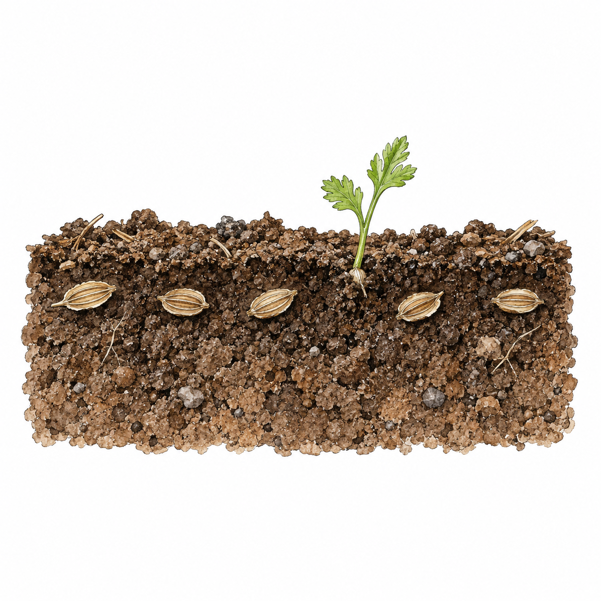

Parsnip
Old Seed / Poor Germination

recognise
Old seed, cold or dry soil and deep sowing can all delay or prevent emergence. Check conditions before resowing.
act
Sow again with fresh seed if the season still allows.
prevent
Use fresh seed each year. Keep the drill moist until seedlings emerge; a few radish seeds can mark the row.